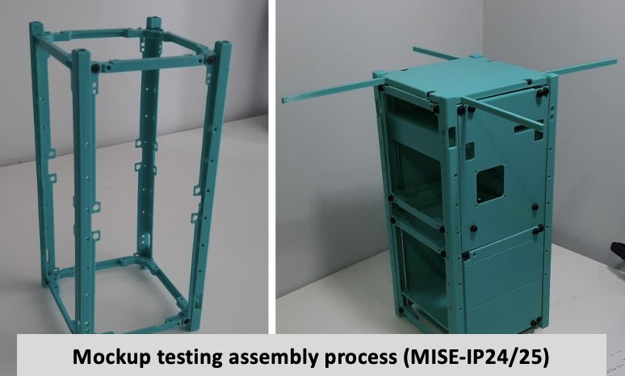
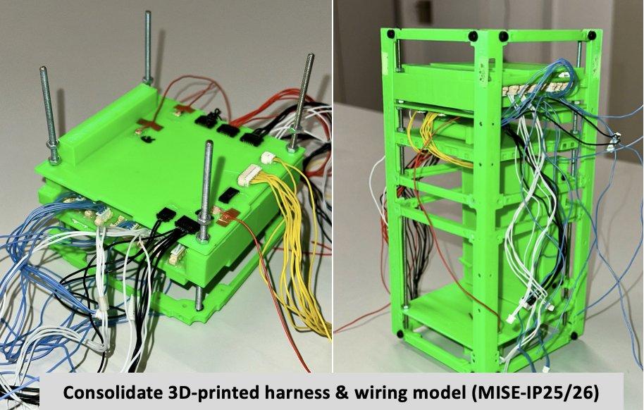
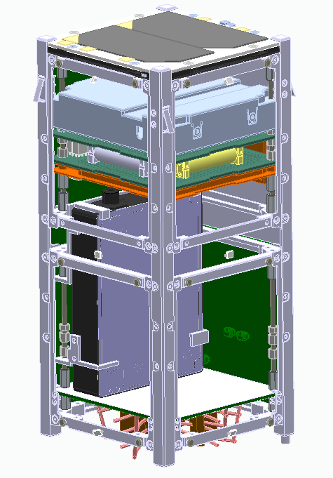
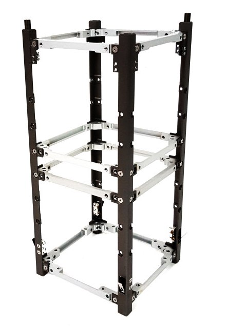
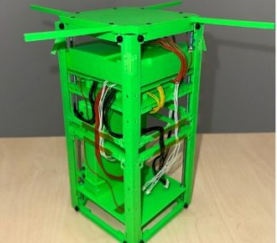

AIVT
Assembly, Integration, Validation, and Testing
Model philosophy
ST3LLARsat1 model philosophy is defined to use the minimum set of physical models needed to qualify the CubeSat before proto-flight model (PFM) delivery, while protecting the flight hardware and building the AIVT knowledge and experience of the team in using the CSAT facilities.
Each model is defined to mitigate identified risks and achieve specific objectives in a progressive and carefully considered manner, ultimately resulting in a PFM with the required confidence level for flight. In the next subsections, the development plan (which details the number of physical models and their representativeness), and the environmental acceptance envelopes (which defines the qualification and proto-flight levels required for the developed models) are described.
Development plan
Four physical models are defined (Mock-up, SM/STM, FlatSat/EM, and PFM), but before describing each type of model below, the next table summarizes their representativeness with respect to flight-like (FL) hardware or with respect to ‘dummy’ models and/or ‘dummy’ mechanical interface (I/F) –i.e., the use of 3D-printed models for hardware components and/or non-flight cables and ports to recreate the flight harness/wiring.
| Item | Mock-up | SM / STM | FlatSat / EM | PFM |
|---|---|---|---|---|
| Structure | FL envelope | FL | N/A | FL |
| EPS | Mech. I/F dummy | Dummy (1)(2) | FL*, not space grade (TBC) | FL |
| Solar panels | Mech. I/F dummy | Dummy (1)(2) | FL, not space grade (TBC) | FL |
| OBC | Mech. I/F dummy | Dummy (1)(2) | FL, not space grade (TBC) | FL |
| Payload spectrometer | Mech. I/F dummy | FL (1st unit) | FL, same unit as STM | FL (2nd unit) |
| AOCS | Mech. I/F dummy | Dummy (1)(2) | FL, not space grade (TBC) | FL |
| In-house antenna | Mech. I/F dummy | FL | FL, same unit as STM | FL |
| COTS antenna | Mech. I/F dummy | Dummy (1)(2) | FL, not space grade (TBC) | FL |
| Harness | FL connectors and routing | Dummy; attach. points qualified (TBC) | Representative connectors and wires, not lengths | FL |
| Application software | N/A | N/A | FL v0.1 | FL v0.2 |
| Other objectives | Assembly procedure | Environmental test procedures | Integration procedures; ASW development | Flight acceptance |
(1) Same mechanical interfaces, but mass-center of gravity-inertia (MCI) as the flight unit.
(2) Same power dissipation.
Mock-up
The mock-up model meets the procured flight system envelope, and it is made with 3D-printed dummies of every unit reproducing mechanical interfaces and connectors position, and a flight-like harness in connectors and routing. Its purpose is to refine the system assembly procedure: training of students, definition of the stacking sequence and of the harness lengths, identification of attachment points and bending radii, and rehearsal of the integration of the external panels. Several have been built in an increasing detail approach, see Figure 18 for the initial and consolidated developments, and Figure 19 for the latest mock-up model (right) together with the latest CAD model and the flight-HW structure.





Structural Model (SM) upgraded to Structural and Thermal Model (STM)
System units will be simulated by machined aluminum dummies with the same mechanical interfaces, mass, center of gravity and moments of inertia (MCI) as the flight units, mounted in the flight structure.
First, the structural model (SM) is a purely mechanical model used for mass/dimension envelope checks and dispenser fit-check. This model is also used for the qualification vibration campaign described in the next subsection, so that the shaker procedures of the CSAT facility are developed using a model that contains no critical flight electronics.
Second, the SM will be upgraded into a structural and thermal model (STM) that incorporates thermal representativeness. This will be achieved by fitting resistors into the appropriate dummies to reproduce each unit’s power consumption and thermal dissipation. This supports the thermal cycling and thermal balance tests that validate the ESATAN-TMS model described in the next subsection. The STM will also be used to environmentally qualify two of the items with no flight heritage (the in-house OBC-PCB and ADCS-PCB will be replaced by dummies as described): the in-house antenna (Tech.IOD-1) and the CubeSat payload (a COTS spectrometer). Both will be integrated as flight-like units so that the STM campaign qualifies them mechanically, and thermally, at system level. A second unit of the spectrometer will be procured and used for the PFM while the other will be used after the qualification tests for the next model (the FlatSat). The COTS deployable UHF antenna is represented by a dummy, since its qualification is covered by the supplier. A mass and length dummy harness will be used to mechanically qualify the attachment points in the same campaign.
FlatSat / Engineering Model (EM)
The FlatSat is a fully functional engineering model (EM), assembled in a flat configuration (i.e., without the structure). The EPS, solar panels, OBC-PCB, ADCS-PCB and in-house antenna are flight-like units (i.e., where possible non-space-grade versions of the same design to contain cost). The payload unit will be the same spectrometer used in the STM, so that it can support the system integration activities in parallel before the PFM implementation. The COTS UHF antenna is represented by its electrical interfaces only, and the harness by representative connectors and wires without flight lengths. The FlatSat will run an application software (ASW) and will support its development through hardware-in-the-loop (HIL) testing in the CSAT SIL/HIL laboratory. Its other purposes are to support the integration procedures, the training of the operations team and, after launch, the ground replica for in-orbit anomaly investigation.
Proto-flight model (PFM)
The proto-flight model (PFM) is the flight unit, with all subsystems flight-like and ASW. Because qualification levels are demonstrated on the SM/STM, the PFM is tested at proto-flight level (that is, qualification amplitudes but only at acceptance duration) to confirm workmanship and verify the design margins established by both detailed analyses and the STM campaign. Its objectives before launch are the verification of integration and functional performance, the validation of power, ADCS and OBC performance, the demonstration of the on-board software, the full functional test, and the flight qualification of the assembled satellite.
Environmental acceptance envelopes
Following the model philosophy of the previous subsection, the satellite structural assembly and internal payloads will be qualified at the CSAT facilities against the environmental envelopes described next (and summarized in Table 7):
Structural verification by analysis relies on two independent finite element models. A first model, built in ANSYS from the CATIA assembly, was reviewed at the ESA-FYS! FDR (March 2024) against the Vega-C environment: rods were assumed as 1D beam elements, panels and boards as 2D shells, frame and standoffs as solids, with a free-free check (six rigid-body modes below 0.02 Hz against a first elastic mode at 483 Hz) preceding the constrained analyses. A second model was rebuilt in Abaqus (January 2025) against the environment of a second European launcher (whose user manual is not public and thus, no further details can be given) to remove the dependence on a single solver and to include a revised payload support. The CAD baseline has been moved from CATIA to SolidWorks and, for the AIV phase, to Solid Edge, from which mass properties and Abaqus geometry are exported. The environmental envelopes applied in both models are taken from the NASA General Environmental Verification Standard (GEVS, GSFC-STD-7000) and from the Vega-C Small Spacecraft Mission Service (SSMS) user manual. A comparison between the two specifications, and with those from the undisclosed launcher, showed that the Vega-C SSMS levels are the most severe, and therefore will be used to define the qualification envelope. Both models constrain the four rail ends on ±Z and apply a qualification factor of 2 on the 10 g design quasi-static load, since compliance has not yet been demonstrated by test.
Thermal verification uses the geometrical and thermal mathematical models built in ESATAN-TMS 2023 with the cyclic solver recommended by ESA, for hot (dawn–dusk, 5 °/s spin about Z) and cold (noon–midnight) cases, with albedo at 0.306, solar constant between 1323–1412 W/m², and an Earth effective temperature of 254.3 K. A MATLAB energy balance was used for the preliminary sizing. The STM undergoes, at qualification level, mass and center-of-gravity measurement, dispenser fit-check, low-level resonance survey, and sine and random vibration on the CSAT’s 11 kN shaker and slip-table, followed by thermal cycling and a thermal balance test once the CSAT thermal-vacuum chamber is commissioned (Q2-2027). The PFM repeats resonance survey, sine and random vibration and thermal cycling at proto-flight level, with a bake-out before thermal vacuum and reduced functional tests at each temperature plateau. The shock environment is verified by analysis only, since no shock test facility is available at the CSAT (indeed, this type of facility is seldom found, and it is believed that only 1 or 2 exist in Spain –at a national lab and a large testing company). Accelerometers will be placed at the locations of maximum response predicted by the finite element models (FEMs), and thermocouples and internal Pt100 sensors will be placed at the temperature reference points of the thermal analysis, so that the sine and random surveys correlate the structural model and the balance test correlates the thermal model before PFM acceptance. The expected tests and the rationale are summarized below.
Additional environmental constraints
In accordance with FYS-FDS-v4.1, ST3LLARsat1 is being designed to comply with the additional environmental constraints beyond the baseline mechanical and thermal envelopes:
Cleanliness & contamination control
All primary assembly, payload integration, and pre-encapsulation operations will be executed at UC3M’s CSAT facilities. The CSAT ISO-7 clean-room guarantees strict particulate and molecular contamination control, relative humidity regulation, and Electrostatic Discharge (ESD) protection throughout hardware handling and integration.
Magnetic cleanliness
ST3LLARsat1 has been designed considering magnetic cleanliness requirements such as using non-magnetic materials for structural and fastener components. Characterization of the spacecraft’s residual dipole will be conducted using CSAT’s in-house measurement setup for determining the residual magnetic dipole of small satellites. Furthermore, CSAT’s 3-axis Helmholtz cage setup will be used to isolate, calibrate, and compensate internal magnetic dipole moments prior to flight integration.
Outgassing environment
Material selection, structural adhesives, and wiring insulation used adhere to low outgassing criteria to prevent contamination of co-passenger spacecraft inside the deployer and test equipment during ground operations.
Environmental test plan
| Environmental test | Rationale & justification for ST3LLARsat1 “Boira” |
|---|---|
| Stiffness and dynamic requirements |
Finite element analysis demonstrates a first natural frequency of 361 Hz (Abaqus, undisclosed-launcher configuration) and 455 Hz (ANSYS, Vega-C configuration) with the four ±Z rail ends rigidly fixed, against the 130 Hz minimum adopted as design requirement, so that no coupling with the launcher fundamental modes can occur. Under the qualification quasi-static load of 20 g in any direction (10 g design load with a factor of 2), the minimum margin of safety is above 100 for all materials in the Abaqus model, with the worst case for the Z-axis load at the interface between the payload-support spacers and the frame. Sine vibration along the axial and lateral envelopes of the undisclosed launcher yields maximum stresses of 2.5 MPa and margins above 90. Compliance will be confirmed by applying the Vega profile, and experimentally with the low-level resonance survey and the sine sweep on the STM. |
| Random and acoustic vibrations |
Random vibration is analyzed with the Vega-C SSMS and GEVS power spectral density profiles, the most severe of the envelopes considered, in the three axes. The worst case is the X-axis input, with a minimum yield margin of 2.2 on the stainless-steel spacers and deformations below 0.4 mm. Random vibration will be tested on the STM at qualification level and on the PFM at proto-flight level on the CSAT shaker. The shock response spectrum gives a minimum margin of 3.9 on the same components as above. The shock environment is verified by analysis only. An acoustic test is not applicable since the CubeSat is enclosed in the dispenser during ascent, and the acoustic loading on a 2U body is enveloped by the random vibration specification. |
| Thermal loads | Thermal analysis will be used to verify that the non-operational CubeSat remains within safe component survival temperatures when exposed to a direct thermal flux of 300 W/m² for up to 270 seconds. This conservative boundary evaluation excludes the additional thermal attenuation and shielding provided by the surrounding deployer container, which will further mitigate thermal fluxes during ascent. |
| Temperature environments | The system complies with ESA FYS-FDS-v4.1 requirement 4.10.7, which requires demonstrating survival during non-operation at a temperature range of −20 °C to +60 °C. |